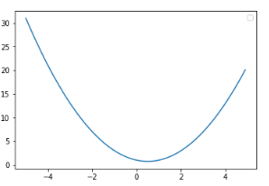

BM25
BM25算法是一种常见用来做相关度打分的公式，思路比较简单，主要就是计算一个query里面所有term和文档的相关度，然后在把分数做累加操作,而每个词的相关度分数主要还是受到tf/idf的影响。公式如下：
$$
score(Q, d) = \sum_{t \in Q} W_t R(t, d)
$$
其中：$R(t,d)$是每个词和文档的相关度值；$t$代表query中的term；$d$代表相关的文档；$W_t$是词$t$的权重。
$W_t$可由外部设置，默认是$idf$值，idf公式的基本思想是：词的重要程度和其出现在总文档集合里的频率成反比。其公式如下:
$$
IDF(t) = \log \frac{N-n(t) + 0.5}{n(t) + 0.5}
$$
其中：$N$是文档总数；$n(t)$是包含该词的文档数；0.5是调教系数，避免$n(t)$为0的情况。取个log是为了让idf的值受N和$n(t)$的影响更加平滑。
从这个公式可以看出当$N$越大，$n(ti)$越小时$idf$值越大，
下面是$R(t,d)$的公式，
$$
\begin {align}
& R(t, d) = \frac{tf(t)(k_1 + 1)}{tf(t) + K(d)} \frac{qf(t)(k_2 + 1)}{qf(t) + k_2} \\
\\
& K(d) = k_1(1-b + b \frac{dl}{avgdl})
\end {align}
$$
其中: $k_1$，$k_2$，$b$都是调节因子，一般$k1=2$，$k2=1$，$b=0.75$； $tf(t)$是词$t$在文档中的次数，$qf(t)$代表词在查询句里的次数；$dl$是文档长度，$avgdl$是文档平均长度；
可以看出如果其他因素一样$dl$越大，相关度越低；至于除以一个$avgdl$，我想是拿本篇文档长度和整体文档长度水平做比较 ，以免单独取$dl$值时过大。
乘积的左边因数代表词在文档中的次数关系，乘积的右边因数代表词在查询语句中的次数关系。绝大多数情况下，查询词在查询语句里面出现一次，所以$qf(t)$可以看成是1，又因为$k_2$为1，所以右边因数其实就等于1，所以公式可化简为下面这样:
$$
R(q_i, d) = \frac{tf(t)(k_1 + 1)}{tf(t) + K}
$$
公式化简后可得:
$$
score(Q, d) = \sum_{t \in Q} IDF(t) \frac{tf(t)(k_1 + 1)}{tf(t) + k_1(1-b + b \frac{dl}{avgdl})} \\
$$
影响BM25公式的因数有
1 $idf$： $idf$越高分数越高
2 $tf$： $tf$越高分数越高
3 $dl/avgdl$ ： 如果该文档长度在文档水平中越高则分数越低。
4 $k_1, k_2, b$为分数的调节因子
BM25F(2004)
一般情况下，一篇文章是分为多个部分的，如 title，content，description，anchor 等，在BM25F算分公式中，这些部分被称为域(field)。有两篇文章，一篇文章的title部分与query 的BM25相关性得分为 a， 另一篇文章的content部分与query 的BM25相关性得分也为 a。假设不考虑这两篇文章其他部分与query的相关性情况，根据经验，一般第一篇文章应该应该比第一篇文章更相关。BM25F 引入了文章d的每个域的信息，它将每个term在文章d中的每个域中的相关性进行了处理。公式如下：
$$
\begin {align}
& score(Q, d) = \sum_{t \in Q} IDF(t) \frac{w(t,d)}{k_1 + w(t,d)} \\
\\
& w(t,d) = \sum_{f \in d} \frac{tf(t,f,d) \times boost_f}{1-b_f + b_f \frac{len(f, d)}{avglen(f)}}
\end {align}
$$
OkaTP(2003)
BM25 被也称为 Okapi BM25, OkaTP是BM25与 term proximity 融合的相关性计算公式。
query中第 $i$ 个term的权重定义为：
$$
qw_i = \frac{qtf_i}{k_3+qtf_i} \cdot \log \frac{N-DF_i}{DF_i}
$$
- $N$ is the sum of documents within all collections,
- $DF_i$ is the number of documents containing the term $t_i$ within all collections.
- $qtf_i $query term frequency.
可以发现 $qw_i$ 的定义在形式上比较像BM25中 query部分与IDF 的乘积。 区别是常量参数的设置。在论文中设置 $k_3 = 1000$.
term proximity 定义如下
$$
\mathrm {tpi(t_i, t_j)} = \frac {1.0}{dist[t_i, t_j] ^2}
$$
$d(t_i, t_j)$ is the distance expressed in number of words between search term $t_i$ and $t_j$.
下式体现了BM25与 term proximity 的融合， 该算法将BM25中的tf 替换成了 $\sum_{occ(t_i, t_j)}tpi(t_i, t_j)$
$$
w_d(t_i, t_j) = (k_1 +1) \frac{\sum_{occ(t_i, t_j)}tpi(t_i, t_j)}{K+ \sum_{occ(t_i, t_j)}tpi(t_i, t_j)}
$$
$K$ 的定义和BM25相同。
OkaTP 最终定义为
$$
OkaTP(q,d) = BM25(q,d) + \sum_{(t_i, t_j) \in S}\min\{qw_i, qw_j\} \cdot w_d(t_i, t_j)
$$
其中 S是 query中所有term 两两组合的集合。
BM25TP(2006)
该算法与 OkaTP 非常相似。
其中TP即 term proximity，在该算法中引入了proximity 信息来优化相关性计算效果。
假设一个query q中包含n个term $\{t_1, \dots, t_n \}$， $d$ 表示一篇文章，任意两个不同term $t_j, t_k$ 在文章 $d$ 中所处位置的距离表示为 $dist(t_j, t_k)$。这两个term的
$$
\begin {align}
& BM25TP(q, d) = BM25(q，d) + \sum_i^n \min\{1, W_{t_i}\} \cdot \frac{acc_d (t_i) \cdot (k_1 + 1)}{acc_d (t_i) + K} \\
\\
& acc_d (t_i) = \sum_{i \neq j} W_{t_i} \cdot \mathrm{tpi}_d(t_i, t_j) \\
\\
& \mathrm {tpi}_d = \sum_{ o(t_i) \in \mathrm {occurrences of t_i in document d}} \frac {1}{dist[o(t_i), t_j] ^2}
\end {align}
$$
note: query中的第 $i$ 个term可能在 document 可能出现多次， 每一次出现用 $o(t_i)$ 表示。
原始论文见 Term proximity scoring for ad-hoc retrieval on very large text collections
可以结合文章 Selective Term Proximity Scoring Via BP-ANN 理解上面第2，3两个公式。
newTP(2008)
文章认为OkaTP存在两个方面的问题 1. OkaTP 算分公式的后面部分(可以看做对于prase的算分)和前面的BM25部分是有重叠的，即一个term会同时出现在前后两个部分； 2.Linear combination of scores of unigrams and those of loose phrases may break the non-linear property of term frequency。
基于这两点提出了 newTP算法。 newTP中引入了 span的概念。 span 是根据query term在一个docment中的命中位置，将整个命中列表分割为多个片段，每个片段称为一个 expanded span。 span 的确定规则如下。
(1) The distance between the current and the next is bigger than a threshold MAX_DIS, then the chain is separated between these two hits;
(2) The current and the next hit are identical, then the chain is separated between these two hits;
(3) The next hit is identical to a hit with former continuous sub-chain, then the distance between the current and the next and the distance between the identical hit and its next is compared, the chain is separated at the bigger gap.
(4) Otherwise, go on scanning the next hit.
其中 MAX_DIS 是认为设定的。
根据span的中 query term的密度和数量来确定一个term对于相关性的贡献。从而取代OkaTP 中的 tpi 和 tf部分。
一个$span_i$ 中的term t的 对于相关性的贡献表示为:
$$
f(t, espan_i) = [\frac {n_i}{width(espan_i)}]^x \cdot (n_i)^y
$$
其中:
- t is a query term,
- espan_i is an expanded span that contains t,
- n_i is the number of query terms that occur in espan_i
- Width(espan_i) is the width of espan_i
- x is an exponent that is used to restrain that the value decayed too rapidly with the density of an expanded span increasing,
- y is an exponent that is used to prompting the case that more unique query terms appear in one expanded span.
一个term t 在整个document 中对相关性的贡献为:
$$
rc_t = \sum_i f(t, espan_i)
$$
可以看出 rc 中包含了 proximity的信息 和 tf的信息。
直接用 rc 替换 BM25 中的 tf， 得到新的相关性计算公式:
$$
newTP = \sum_{t \in Q} w_t \cdot \frac{rc_t(k_1 + 1)}{rc_t + K}
$$
BM25TOP(2012)
其中TOP即 term order proximity. 该算法是在BM25TP的基础上进行的优化。在该算法中引入了 term oder信息， 如果两个term在 query中出现的顺序 与 其在document中的顺序相反则进行惩罚， 如果顺序相同则 reward。
在BM25TP算法中 使用的 $dist[o(t_i), t_j] ^2$ 来计算proximity， 但是这个公式对于term oder是不敏感的。就会认为 John is faster than Mary 和 Mary is faster than John 两个句子是相同的。
为了说明 BM25TOP算法，先引入如下两个定义。
$p_{t_i;Q}$: The position of $t_i$ in query Q
$p_{t_i;d}$: The position of $t_i$ in document d
在BM25TOP 中使用了一个新的公式对 $dist[o(t_i), t_j] ^2$ 进行了替换。这个公式应该符合如下三个条件。
- always positive, regardless of $p_{t_x ;d} - p_{t_y ;d} > 0$ or $p_{t_x ;d} - p_{t_y ;d} < 0$;
- rewards term proximity; becoming higher as $p_{t_x ;d} - p_{t_y ;d}$ increases and vice versa; (since the score is inversely proportional to this quantity).
- rewards correct term ordering, becoming higher in case of $p_{t_x ;d} - p_{t_y ;d} < 0$ and vice versa;
满足前两条是BM25TP算法中dist 函数也能满足的，第三条是增加考虑 term order 的一项。
满足以上三个条件的公式挺多，论文中选择了如下公式。
$$
\begin {align}
& \phi_d(t_x, t_y) = [a_d(t_x, t_y)]^2 - a_d(t_x, t_y) +1 \\
\\
& a_d(t_x, t_y) = \frac{(p_{t_x ;d} - p_{t_y ;d}) }{\xi(t_x, t_y)} \\
\end {align}
$$
其中
$$
\xi(t_x, t_y) = \left\{
\begin {align}
1, & p_{t_x ;Q} - p_{t_y ;Q} > 0 \\
-1, & p_{t_x ;Q} - p_{t_y ;Q} < 0 \\
\end {align}
\right .
$$
$\phi_d(t_x, t_y)$ 的大小表示 $t_x$ 和 $t_y$ 在文档 d 中 的相对距离，符号说明了这两个term在query和document中的顺序是否相同，正号(+) 表示顺序相同，符号(-) 表示这两个term在query和document中的顺序相反。
$ \phi_d(t_x, t_y)$ 随 $a_d(t_x, t_y)$ 的函数变化图像如下:

note: proximity 是 $\phi_d(t_x, t_y)$ 的倒数， $\phi_d(t_x, t_y)$ 值越大 proximity 越小。
从上图可以看出，两个term距离越远， $\phi_d(t_x, t_y)$ 越大， proximity 越小；
当对于两对term的 $a_d$ 的大小相等，但符号相反时，符号为负(-) 的一对 term 的proximity会更小。
下面将BM25TOP的计算公正整理如下：
$$
\begin {align}
& BM25TOP(q, d) = BM25(q，d) + \sum_i^n \min\{1, W_{t_i}\} \cdot \frac{acc_d^” (t_i) \cdot (k_1 + 1)}{acc_d^” (t_i) + K} \\
\\
& acc_d^” (t_i) = \sum_{i \neq j} W_{t_i} \cdot \mathrm{tpi}_d^”(t_i, t_j) \\
\\
& \mathrm {tpi}_d’’ = \sum_{ o(t_i) \in \mathrm {occurrences of t_i in document d}} \frac {1}{\phi_d(o(t_i), t_j)} \\
\\
& \phi_d(o(t_i), t_j) = [a_d(o(t_i), t_j)]^2 - a_d(o(t_i), t_j) +1 \\
\\
& a_d(t_i, t_j) = \frac{(p_{o(t_i) ;d} - p_{t_j ;d}) }{\xi(o(t_i), t_j)} \\
\end {align}
$$
其中:
$$
\xi(o(t_i), t_j) = \left\{
\begin {align}
1, & p_{o(t_i) ;d} - p_{t_j ;d} > 0 \\
-1, & p_{o(t_i) ;d} - p_{t_j ;d} < 0 \\
\end {align}
\right .
$$
其他
文章： An exploration of proximity measures in information retrieval
对 Span-based approaches 和 Distance aggregation approaches 两大类方法中的 5 个度量 proximity 的方法进行了测试， 确定 min cover 的度量方法是其中最好的一种 proximity 度量方法。并将 min cover proximity 整合到了 BM25中
文章 Learning in a Pairwise Term-Term Proximity Framework for Information Retrieval 罗列了 11个proximity 的度量方法，并将它们整合到了 一个统一的相关性计算公式中。
未完待续
参考资料
- BM25相关度打分公式
- BM25F： Robertson, S.E., Zaragoza, H., & Taylor, M.J. (2004). Simple BM25 extension to multiple weighted fields. CIKM.
- OkaTP：Y. Rasolofo and J. Savoy. Term Proximity Scoring for Keyword-Based Retrieval Systems. In Proceedings of the 25th European Conference on IR Research (ECIR 2003) pages 207–218, April 2003
- BM25TP： S. B uttcher, C. L. A. Clarke, and B. Lushman. Term proximity scoring for ad-hoc retrieval on very large text collections. In Proc. SIGIR, pages 621- 622, 2006.
- newTP：Song R , Taylor M J , Wen J R , et al. Viewing Term Proximity from a Different Perspective[C]// European Conference on Information Retrieval. Springer, Berlin, Heidelberg, 2008.
- BM25TOP：L. Akritidis, D. Katsaros, and P. Bozanis. Improved retrieval effectiveness by effcient combination of term proximity and zone scoring: A simulation-based evaluation. Simul. Model. Pract. Th., 22:74{91, 2012.
- 5 proximity mmeasures：T. Tao and C. Zhai. An exploration of proximity measures in information retrieval. In Proc. SIGIR,pages 295-302, 2007
- 11 proximity mmeasures：Cummins R , O’Riordan C . Learning in a Pairwise Term-Term Proximity Framework for Information Retrieval[C]// International Acm Sigir Conference on Research & Development in Information Retrieval. ACM, 2009.